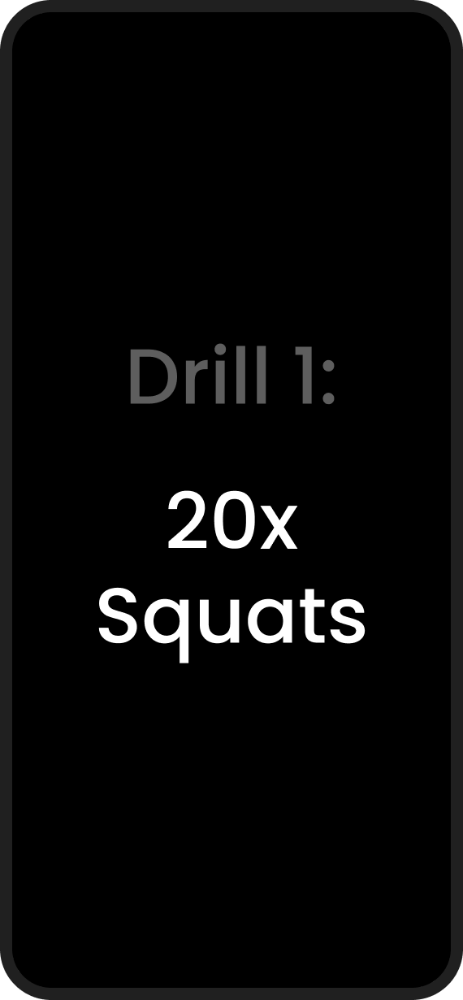

- 2 landing pages: responsive, desktop and mobile
- Web registration and payment flow
- First-run mobile onboarding
- Olympiad app flows: pre-event, live, error and waiting states
- ~8 weeks, sole designer
← All projects
Case study / Sports tech / 2024-25
Making a living room feel like a stadium.
India’s first at-home sports olympiad: paid, camera-scored, for students aged 12 to 18. I designed everything a family would touch, from the first ad click to the final point total.
3 min skim9 min in full07 chapters

The short version
01 / The gig
A national olympiad, refereed by a phone camera.
Khiladipro scores sports drills with visual AI. For the summer holidays it went nationwide and paid, for students aged 12 to 18, and I was the sole product designer on it.
Chapter 01, the landing page ↓
02 / What I shipped
Four surfaces, from the ad click to the final rep.
The landing and registration experience on web, plus first-run onboarding and every live event state on Android and iOS. No design system, eight weeks, a four-person launch team.
Chapter 03, onboarding ↓
03 / The hard part
Three trust problems, none of them visual.
Parents paid before installing anything. Teenagers set up a camera alone. And an AI referee had to feel fair from three metres away.
Chapter 04, the live event ↓
04 / What happened
They came back with a second brief.
A rehire is the outcome I can publish with confidence. The analytics stayed with the client, and Chapter 06 says exactly what I would have measured.
Chapter 05, the outcome ↓By the numbers
What it actually was
The hardest screen wasn’t an exercise screen. It was the moment a parent decided to trust us with their child, their card, and their camera.
Marketing could make the olympiad exciting. Design had to make it feel legitimate: worth paying for before the app was installed, possible for a 13-year-old to set up alone, and fair when a machine did the scoring.
The box I was working in
Nothing here was a blank page.
Five constraints shaped every decision in this study. Each row says what it forced, and opens the chapter where it bit.
- C-01 An inherited design language, no design system.The app already existed; my screens had to look native to it, with only a little wiggle room. Every state had to feel like an event while still passing as the app it lived in. Type, scale and pacing carried what a new visual language couldn’t.Bites in CH 04 ↓
- C-02 A calendar nobody could move.The window was locked to the school holidays, and marketing needed the pages live well before it opened. The dates got hero billing on the landing page. With a door that closes on 15 June, the deadline was the argument.Bites in CH 01 ↓
- C-03 Three audiences, one URL.Students compete, parents pay and supervise, academies bring whole cohorts — and paid ads landed all three on the same page. One page had to make three different promises: prizes for the competitor, legitimacy for the parent, credibility for the academy.Bites in CH 01 ↓
- C-04 Persuasion before install.Registration and payment happen on the web, before the app is ever downloaded. Proof had to sit in the same viewport as the payment field. Nothing convincing could be deferred to a section further down.Bites in CH 02 ↓
- C-05 A team of four.Me, a product manager, an engineer, and the CEO. No second designer to review anything. Chapter 06 is me marking my own work.Bites in CH 06 ↓
The experience map
This wasn’t a funnel. It was a relay.
Every handoff had to preserve confidence: from a parent’s browser to a child’s bedroom, then from a physical drill back into a digital score. Five stages, one promise: this is going to work in my home.
01
Believe
What is this, and is it real?
The landing page ↓
02
Commit
Worth paying for, before the install?
Registration and payment ↓
03
Set up
Can a 13-year-old do this alone?
First-run onboarding ↓
04
Compete
Does an AI referee feel fair?
The scored test ↓
05
Return
What did I earn, and what’s next?
The live event ↓
Stage 01 · The landing page
CH 01 / 06
Sell the stadium before it exists.
Paid ads dropped a 14-year-old, the parent holding the card, and an academy coach on the same URL (C-03). Three readers, three different questions, one scroll to answer all of them — and nothing to demo, because the olympiad had never run before.
The parent pays before the app is even installed, so the landing page has to do all of the convincing.
One page, three readers
Same scroll. Three different arguments.
Point at a reader and the shipped page settles on the part written for them. Let go and it drifts on with your scroll.Each of them is answered at a different depth of the page below, in the order it makes its three promises.

The shipped olympiad page, top to bottom. Two of the three promises land before the fold; the third is the one a coach will scroll for. The shipped page, interactive ↗
Three promises, one page. Splitting them into three would have meant three ad budgets.
The fold, on the device that mattered
Then most of that traffic arrived on a phone.
The same argument, in roughly a third of the space. The order of proof survives the move; the quantity does not, and the button is what everything else has to make room for.
Desktop 1440
- 01India’s first · Sports & Fitness Olympiad
- 0225 May – 15 June
- 03For Khiladis · prizes and recognition
- 04For Parents · stay on top of progress
- 05For ages 12–18
- 06Register Now
the fold
The photograph runs alongside, in a second column.
Mobile 390
- 01India’s first · Sports Olympiadtwo words lighter
- 0225 May – 15 June
- 03The photographclimbs the page
- 04For Khiladis · prizes and recognitionone chip, not two
- 05Register Now
the fold
Five things fit. The parent’s line waits just below.
What the cut costThe parent loses their line above the fold, so the dates and the photograph have to carry the legitimacy alone until they scroll. On a page selling a first-of-its-kind event, that is the trade I would put in front of a test before anything else on this page.

How I got there · three passes, three questions
-
01
Who is this for, and what must each of them believe?
Structure settled first, in grey boxes, before anyone could argue about a typeface.
Lo-fi prototype ↗ -
02
What order makes all three arguments effortless to scan?
Layout and the registration path, locked together, because the page only exists to reach that button.
Mid-fi prototype ↗ -
03
How does an event page still read as the product it belongs to?
Polish last, inside an inherited visual language with very little room to move (C-01).
The shipped page, above.
Stage 02 · Registration and payment
CH 02 / 06
Reassurance belongs beside the payment field.
The moment of maximum doubt is the payment step of an event that has never existed before. The answer wasn’t a cleverer form. It was keeping proof in the same viewport as the commitment.

Step 1 of 3. Credibility sits in the same viewport as the commitment.
- 1Three steps, labelled. A parent can see exactly how long this will take before they start typing.
- 2Proof beside the form. A quote from Jonty Rhodes and one from an academy coach sit level with the fields, right where hesitation happens.
- 3Date of birth does the qualifying. The 12 to 18 band is enforced in the form rather than argued about in an FAQ (C-03).
Payment UI is trust UI. Nothing on this screen is decorative. Registration flow, steps 1 to 3 ↗
Stage 03 · First-run onboarding
CH 03 / 06
Teaching a phone to watch you.
The first session is where this product lives or dies. A first-time user, often a 13-year-old, unsupervised, has to grant camera access, prop their phone against a wall, walk three metres away, and trust that an AI is counting fairly — all before a single point is on the line. If setup fails, the drill can’t be scored; for a paid event, that’s a refund request. One run, nine screens, designed around that single failure mode.
Install9 screens3 metresFirst point


01 · The explainerShow the magic before asking for anything.
New users arrive from olympiad ads with zero context. A short video explains what the Supervision AI does before the app requests a single permission.
02 · The permissionEarn the camera before the OS asks.
A plain-language rationale precedes the system dialog: why the camera, what it sees, what it is used for. In an app aimed at minors, a refusal here is fatal.
03 · The first drillOpen on one nobody can fail.
Drill one of three is a single static thing: hold your head inside the oval. The way out stays visible too — every setup screen keeps a skip, so a player who already knows the drill is never held hostage by a tutorial built for strangers.
04 · The placementShow the setup, don’t describe it.
Phone placement is the make-or-break moment of the whole product, and text fails at it. A real room, a phone propped on the floor, a camera cone reaching a full body: that lands.
05 · The walk awayDrill two moves the player across the room.
Standing inside the outline is a rehearsal that costs nothing, and it is where the interface changes job. Nothing is in reach now, so type size, not tap size, carries the instruction.
06 · The verdictInstant, unmissable, one word.
A judgement a player can read mid-movement, without walking back to the phone. Sized for the far side of a bedroom, with nothing else on the screen competing with it.
07 · The handoffMomentum carries into the next drill.
No menus between reps. The next instruction lands while the player is still breathing hard, so the run keeps its rhythm instead of restarting three times.
08 · The countThe score is the interface.
Mid-drill a player needs three facts without touching anything: which drill, how many reps left, how far through the set. Pills, one oversized fraction, and a body big enough to check your own form against.
09 · The finishEnd on a win, not a dialog.
The flow closes on a celebration and ten points actually banked: the peak-end rule, applied deliberately. Setup is over and the player has already scored.
Once the player walks away from the phone, tap targets stop mattering: type size is everything.
Stage 04 · The live event
CH 04 / 06
Designing the waiting.
An event app spends most of its life between moments of action. The interesting work wasn’t the happy path, it was the states: waiting, error, progress, and completion all had to carry the energy of the event, inside an inherited design language with a little wiggle room (C-01).
The scored test · 02
The action itself is two screens, repeated.
Once a test starts, the app alternates between announcing a drill and counting it, at the same room-scale as onboarding. Everything else in this chapter is the time around them.



The other four states · 04
Don’t leave users alone between the hero moments.
The event had to stay useful when a code failed, while a participant waited for the window to open, and before a child committed to a test that takes twenty-four minutes.


After the race · The outcome
CH 05 / 06
The work earned a second brief.RehiredA good sign, they came back
After the olympiad shipped, Khiladipro’s growth team came back: a landing page for a fan campaign timed to the IPL, the world’s biggest cricket league. Their in-house team took the app screens; I designed the campaign page, desktop and mobile.
A rehire is the one outcome metric I can publish.

The IPL campaign page: pick your team, sweat for it, climb the leaderboard.
The honest scorecard
CH 06 / 06
No numbers I can’t stand behind.
This was an execution engagement: the client owned the analytics, and I never had access to them. Rather than decorate the ending with numbers I can’t verify, here is exactly what shipped, what I would have measured, and what I’d do differently.
- Landing to paid registration conversion, split by audience
- Onboarding completion, and the exact drop-off step
- Setup-failure rate on the first scored drill
- Daily return rate through the event window
- Share of drill submissions flagged unscoreable
- Comprehension-test the onboarding with actual 12-year-olds, not adults
- Negotiate analytics access into the engagement, not after it
- Revisit the binary gender field on registration
- Design the poor-network and failed-upload states for drill videos
Everything clickable in this study
07 Figma prototypes
In their words
Priyank is a talented designer with great skills. He showed intuitive product thinking. He is very proactive with his contributions and gives a lot of attention to detail. Working with him was a pleasure. I highly recommend him.
The takeaway
Good product design is how a big promise survives contact with real life.
I’m a senior product designer for 0→1 and growth-stage teams. If you’re building something complex, or need a designer who carries the story all the way to shipped detail, I’d love to talk.
P.S. Feeling decisive? Type hire anywhere on this page.
Three things this one taught me
-
01
Trust is a screen, not a feature.
A page in front of a parent decided whether the product got used at all.
Chapter 01 ↑ -
02
A machine has to show its work.
An AI referee reads as fair only if you can watch it count.
Chapter 03 ↑ -
03
Design the waiting, not just the winning.
Most of an event is the time between attempts, and those states carry it.
Chapter 04 ↑
Fin
Khiladipro · India’s first at-home sports olympiad · 2024–25
Designed by Priyank Agarwal